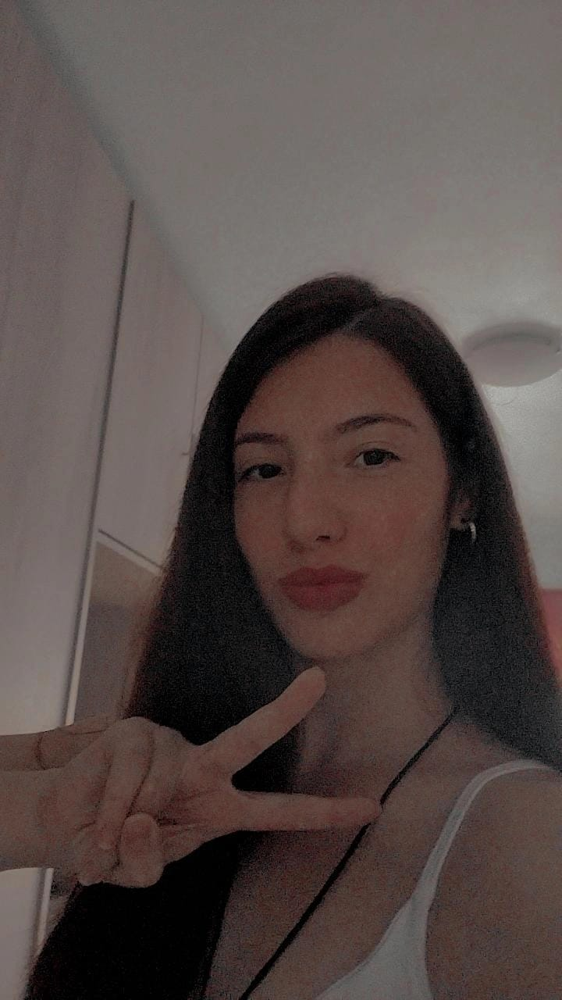
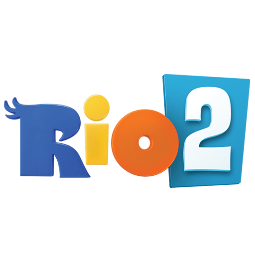

Julia Nicole Polli Costa
Oi, meu nome é Julia e eu sou uma estudante do ensino médio e curso análise e projeto de sistemas tenho 16 anos e entrei no mundo da TI por curiosidade mas acabei gostando e agora busco me aprofundar na área.
curriculoProjetos 💜
-
 https://github.com/Julia-Nicole/mario
https://github.com/Julia-Nicole/mario
Projeto escolar para matéria de front-end.
Projeto baseado no recente filme do mario (lançamento 2023), utilização de html e css. -

https://github.com/Julia-Nicole/rio2
Projeto baseado em um evento online com o objetivo de aprendizado e para agregar mais um projeto ao portifolio.